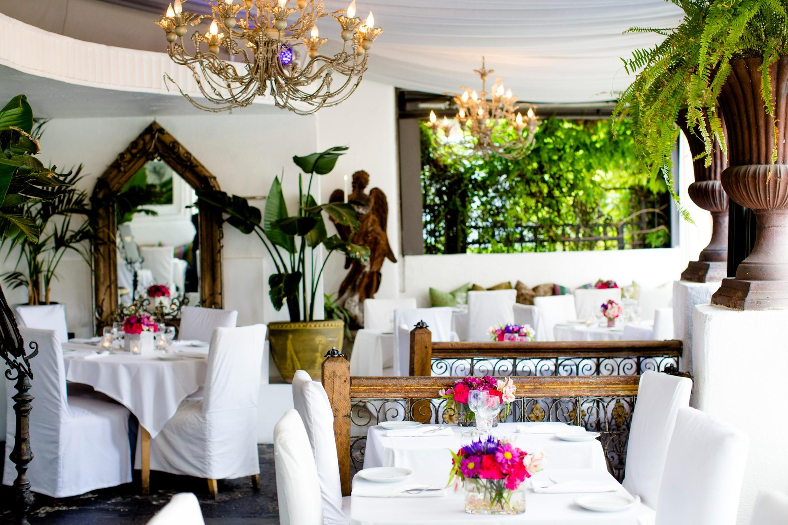

Fried Goat Cheese Balls — $18
Mango chutney and crostini.
SUR Restaurant & Lounge
Explore appetizers, salads, main dishes, pasta, desserts, and weekend brunch at SUR. Prices and availability may change.

Jump to: Appetizers | Salads | Main Courses | Pasta | Desserts | Brunch
Mango chutney and crostini.
Seasonal vegetable soup.
Dietary information: Plant based, gluten-free
Hummus, whipped ricotta, beets, lentils, and spiced pita.
Dietary information: Vegetarian
Avocado, cilantro, lime juice, and tortilla chips.
Dietary information: Plant based
Romaine with cheese, herb breadcrumbs, and crostini.
Dietary information: Vegetarian
Radicchio, romaine, pistachios, cranberries, and citrus vinaigrette.
Dietary information: Plant based; contains nuts
Arugula, apple, pepitas, beets, and apple cider vinaigrette.
Dietary information: Plant based; contains nuts
Salmon with melted leeks and heirloom potatoes.
Dietary information: Gluten-free
Chicken with roasted carrots and red pepper sauce.
Dietary information: Gluten-free
Seasonal vegetables, couscous, raisins, and grilled flatbread.
Dietary information: Plant based; contains nuts
Steak with chimichurri, aioli, and rosemary potatoes.
Gnocchi with Grana Padano and chives.
Dietary information: Vegetarian
Rigatoni with tomato sauce, ricotta, eggplant, and basil.
Dietary information: Vegetarian
Lasagna with beef Bolognese, basil, and Parmesan.
Blackberry cobbler with vanilla ice cream.
Crème brûlée with mixed berries.
Dietary information: Gluten-free
Seasonal sorbet with berries and coconut crumble.
Dietary information: Plant based
French toast with maple syrup and mixed berries.
Dietary information: Vegetarian
Sourdough toast with avocado, tomatoes, onion, and egg.
Dietary information: Vegetarian
Pancakes with maple syrup and fresh berries.
Dietary information: Vegetarian; contains nuts
Menu information adapted from SUR's official dinner and brunch menus. See the current official menu.